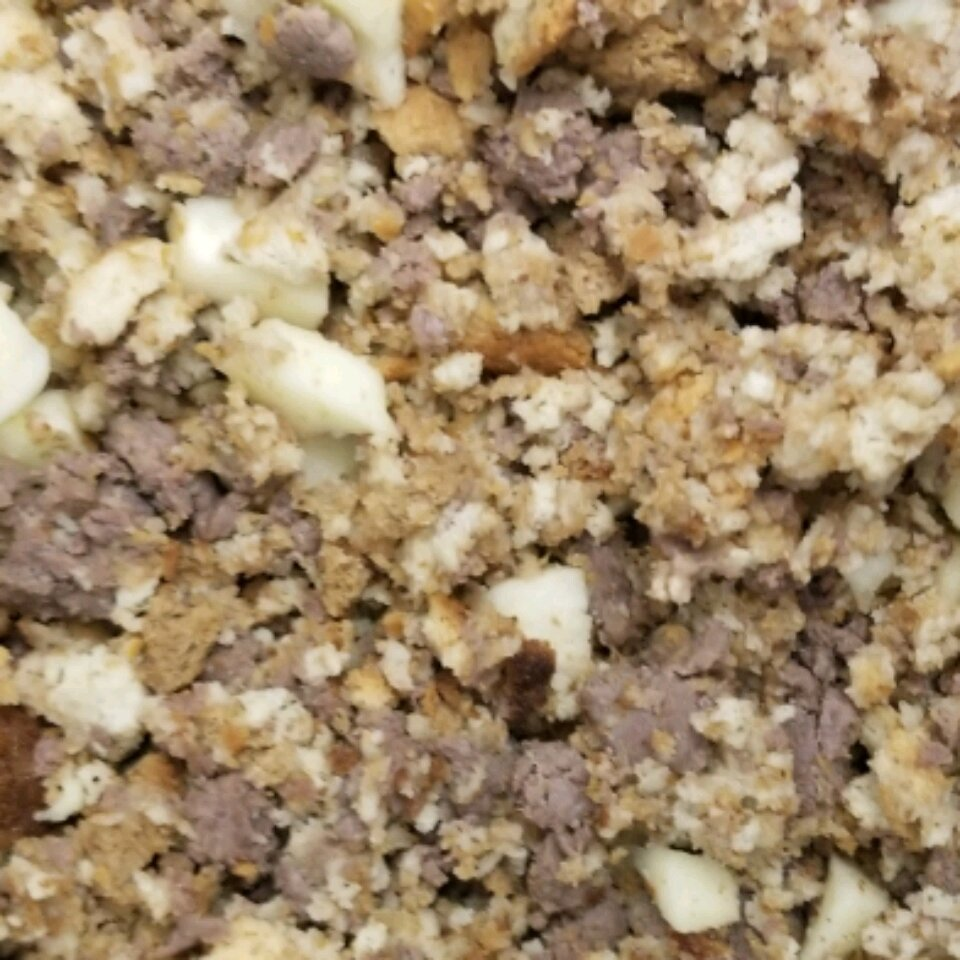

Sauasage Stuffing

Description
This is a sausage stuffing dish made for Thanksgiving. Read further on for the ingredients and recipe.
Ingredients
- 1 pound of breakfast sausage
- 1.5 cups finely diced celery
- .75 cup of margarine, melted
- 8 cups white bread crumbs
- 3 teaspoons poultry seasoning
- .25 teaspoons ground black pepper
Steps
- Cook sausage, Drain.
- Melt margarine. Add enough to sausage drippings to make one cup
- Saute; onions and celery in margarine/dripping mixture until onion is tender.
DO NOT BROWN. Stir in about 1/3 bread cubes.
Put in big bowl and add remaining bread cubes,
poultry seasoning, and pepper. Watch your hands, it's hot. Mix well.
- Stuff turkey. You can also omit the sausage,
increase the bread cubes to 9 cups, and add a
teaspoon or two of salt.
You can also add apples, giblets, oysters,
etc. This recipe is very adaptable. When cooking extra in the oven,
place the stuffing in a buttered casserole dish, and place in a pan of hot water.
Cover, and baste with turkey drippings occasionally. It comes out really good.